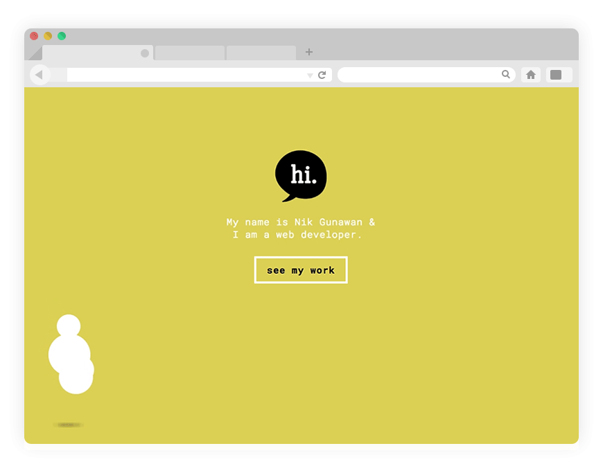
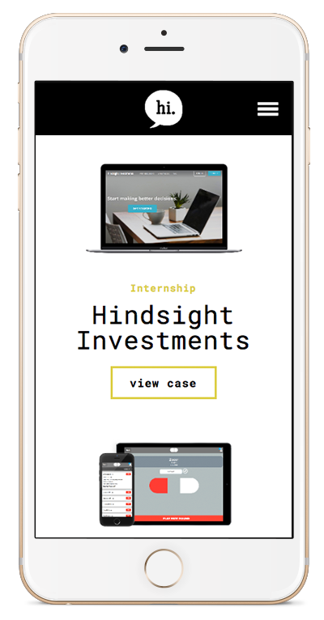
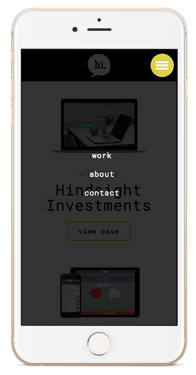
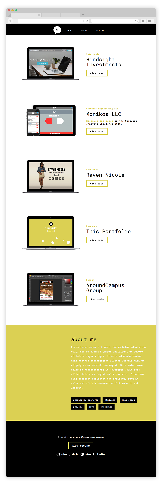

overview
I wanted to make a minimalistic portfolio site that highlighted my past works and experiences without adding too much complexity. This website also showcases a collection of modern best practices I've adapted for developing responsive, scalable, and maintainable websites.
What I did:
- Used LESS as CSS pre-processor for more intuitive code.
- Used BEM naming convention for cleaner and more readable CSS and HTML.
- Used SEO best practices such as semantic HTML and alt tags.
- Used new Grid Layout while providing backwards compatibility to a more supported Flex Layout.
- Used Autoprefixer and Normalize.css to add more cross-browser compatibility.
- Implemented Lazy Loading using bLazy to speed up loading time for the gallery page.
- Minified and concatenated CSS files to improve overall site performance.
- Made sure site is viewable for disabled/broken JavaScript.
font
color scheme
“I strive for two things in design: simplicity and clarity. Great design is born of those two things.”
-Lindon Leader
greeting page
A greeting page that clearly states the purpose of this portfolio with added flourish.
Each ball is a javascript object with 5 properties (jump_height, jump_time, diameter, shadow_max, shadow_min). To create a more realistic bounce animation, I had to transition between easeOut(going up) and easeIn(going down) animations. To do this, I had to create a recursive loop with JQuery's animate function. To create the illusion of the ball going across the page, I wrapped the balls inside a wrapper that is also animated back and forth across the screen.
responsive design
 Responsive design is ever more important in an age where internet browsing through mobile devices is very common. Using media queries, this portfolio is made viewable on all device sizes.
visual hierarchy
Without visual hierarchy it's easy to lose the viewer's attention and leave them confused on what a site's intentions are. Using colors, negative spaces, font sizes, and alignment I tried to create a sense of aesthetic balance as well as a seamless user experience.
